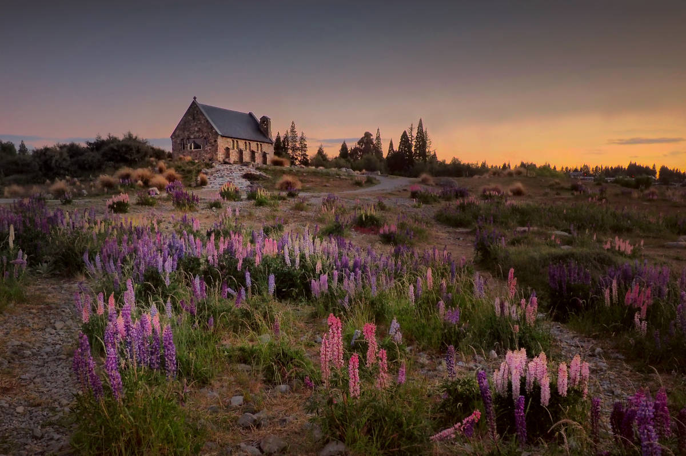
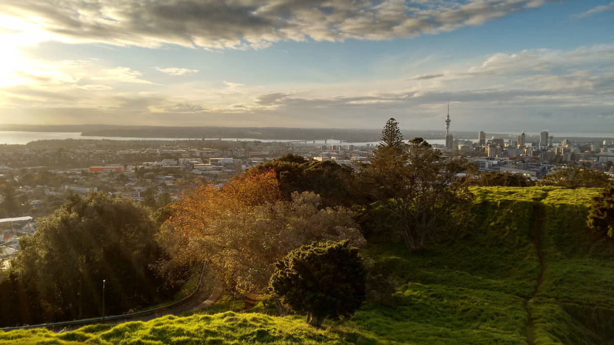
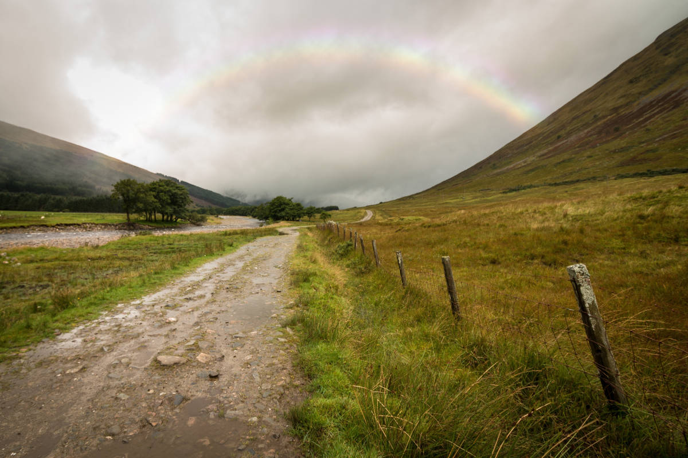

House on a Hill
original by Peter Hammer
Walk on The Flower Road
original by Aaron Brunhofer
Mountains in The Distance
original by Keghan Crossland
 In The Winter of Our Discontent
In The Winter of Our Discontent
original by Ricardo Gomez Angel

A View of The City
original by Mathew Waters

Take a Stroll to Find The End of The Rainbow
original by Asa Rodger